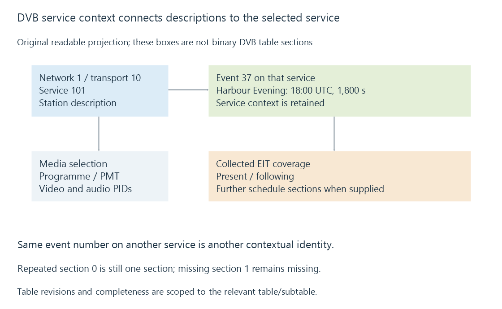

DVB Service Information and broadcast guides
DVB Service Information describes broadcast services, programme events and timing context through tables that a receiver must collect, interpret and associate with the selected service.
A DVB transport stream carries more than audio and video. Service Information, commonly called DVB-SI, describes the services and events available in the broadcast environment.
A receiver can use that information to build a station list and guide. The resulting descriptions must stay associated with the right service while table sections repeat and change.
For Emby, the final guide still depends on its configured source and supported backend/importer. Broadcast SI existing in the multiplex does not prove that a particular integration exposes it as Emby guide data.
Different tables answer different questions
The Service Description Table identifies and describes services. The Event Information Table supplies programme events. Network and time tables provide other context, including delivery descriptions and the clock interpretation used by receivers.
Media selection still uses programme/component information such as the MPEG-TS programme tables. An event title is not a video-stream PID.

The catalogue currently identifies EN 300 468 V1.20.1, dated September 2026, as the published SI specification.
An event belongs to a service context
This invented readable projection retains the relevant identities:
{
"originalNetworkId": 1,
"transportStreamId": 10,
"serviceId": 101,
"eventId": 37,
"startUtc": "2026-10-12T18:00:00Z",
"durationSeconds": 1800,
"title": "Harbour Evening"
}
The projection is not the binary layout of an EIT section. It makes the association visible: event 37 describes an airing on service 101 within the declared network/transport context.
Another service can have an event numbered 37 as well. Taking the event number alone loses which station it describes. Replacing the service context with the viewer’s display number can also lose information.
Service identifiers develops that broadcast context. The guide importer must preserve it, or translate it into an equally unambiguous internal identity.
Now and next do not imply a full schedule
EIT present/following and EIT schedule are separate classifications. Actual-transport and other-transport information have distinct table identities too.
A receiver can collect current/following events while having little or no longer schedule data. It might also receive descriptions about another transport without currently acquiring that transport’s media.
These distinctions explain a useful observation pattern:
| Collected information | What the receiver can reasonably present |
|---|---|
| Service description only | Station label without programme schedule |
| Present/following events | Current and next entries for the relevant service |
| Additional schedule sections | Further airings within their supplied coverage |
The actual amount depends on the transmitted sections and what the receiver retains. RF lock does not establish that every schedule section has been collected.
A table revision has several parts
A sectioned table may need several sections before its full current contents are available. Repeated reception of section zero does not stand in for a missing section one.
Consider an original assembly exercise:
| Observation | Version | Section | Declared last section |
|---|---|---|---|
| First arrival | 31 | 0 | 1 |
| Repeated arrival | 31 | 0 | 1 |
| Completing arrival | 31 | 1 | 1 |
| Changed table begins | 0 | 0 | 1 |
The first two rows have the same collected section set: only zero. The third completes that version’s two-section set. The fourth belongs to a changed wrapping version and must not be combined casually with the old section one.
Version identity is scoped to the table/subtable context. A numerically larger version is not always newer, and identical version numbers on unrelated services do not identify the same data.
See Also
- Broadcast service identifiers
- Broadcast multiplexes
- DVB-T2 terrestrial television
- Electronic programme guides